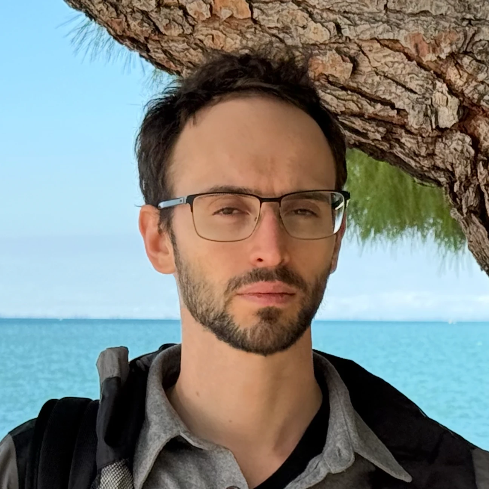
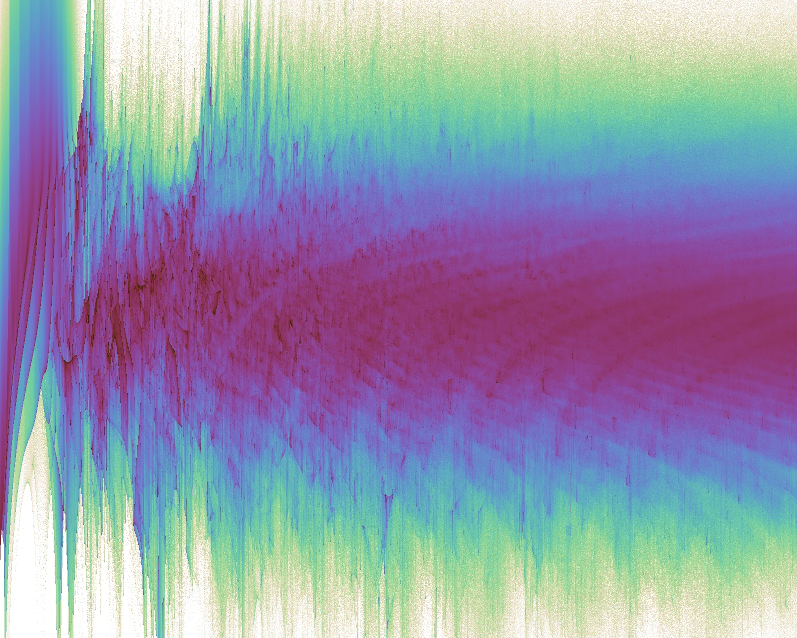
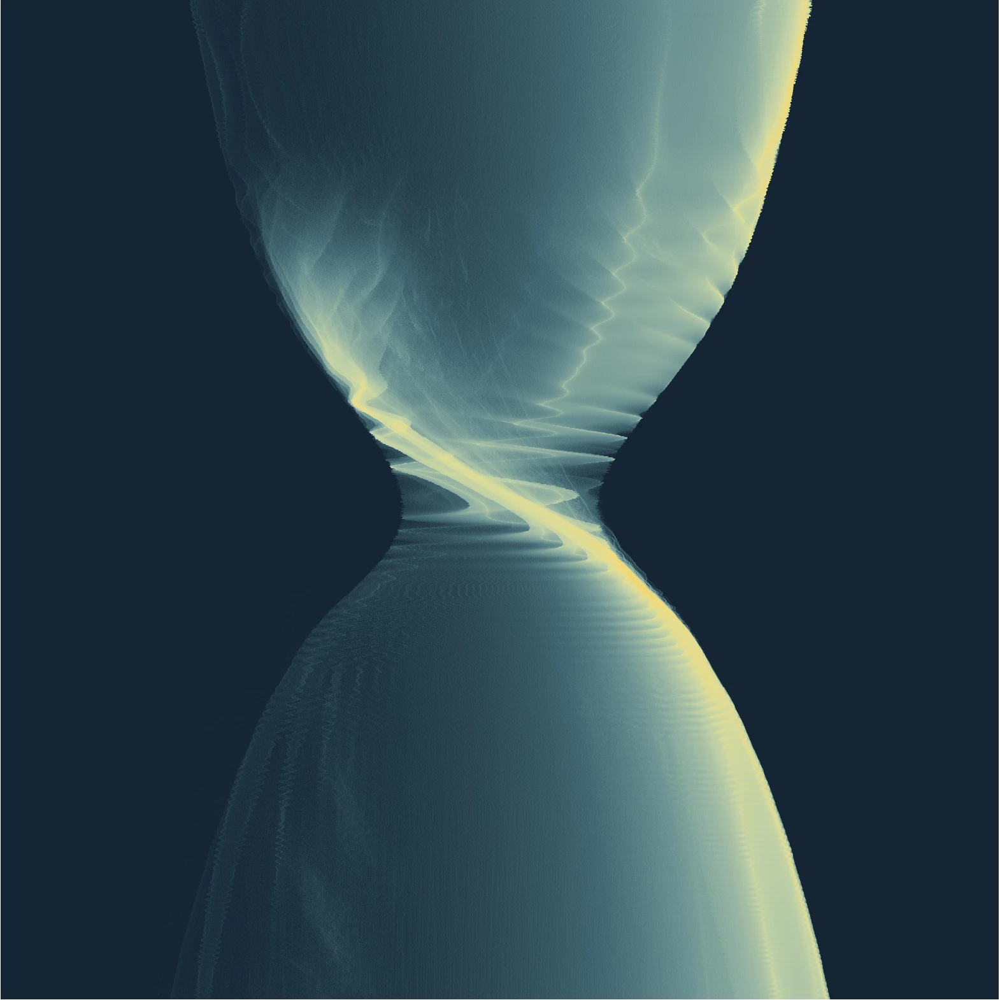

2026Axions
Axiverse Lampposts
with Masha Baryakhtar and Ella Henry

with Masha Baryakhtar and Ella Henry
with Pouya Asadi and Stefania Gori
with Olivier Simon · Phys. Rev. Lett. 135, 101003

Axion refinement histogram.

Resonant Nonlinear Pairs in the Axiverse and Their Late-Time Direct and Astrophysical Signatures.
CETUP* · Sanford Underground Research Facility, South Dakota
4th General Meeting of COSMIC WISPers · Corfu
ALPs Across Scales · Mainz Institute for Theoretical Physics
CERN Theory BSM Forum · Geneva
Leinweber Institute for Theoretical Physics · Stanford
Particle/Astrophysics Seminar · Case Western Reserve University
Perimeter Institute Recorded Seminar Archive